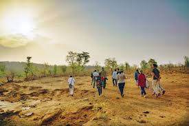
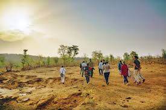

About Human Relationship with Forest
Forests have always played a vital role in the development of human civilization. They provide essential resources such as food, medicine, shelter, and fuel. Beyond these tangible benefits, forests contribute to the ecological balance and support biodiversity, which ultimately sustains human life.
Many indigenous communities live in forests and depend on them for their livelihood. They have a deep cultural and spiritual bond with nature. Their traditional knowledge and sustainable practices help protect forest ecosystems and maintain ecological balance.
Modern activities like deforestation, mining, and urbanization are damaging forests. This threatens wildlife and affects people who rely on forests. To ensure a sustainable future, humans must protect forests through conservation, responsible use, and support for forest communities
 
